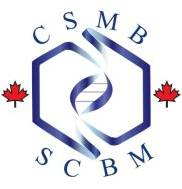
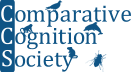

May 8th to 10th, 2014
University of Guelph, Guelph, Ontario
Home Venue Program Register Instructions Hotel Guelph Contact
This year, we are proud to announce that OE3C 2014 will be hosted by the University of Guelph. We invite undergraduates, graduates, post-docs, and faculty across Ontario to share their new research in May 2014!
Registration and abstract submission will open Feb 28th, 2014.
Plenary
Speakers
|
|||||
| Sponsors University of Guelph College of Biological Science University of Guelph Department of Psychology University of Guelph Office of Graduate Studies University of Guelph Department of Integrative Biology   |